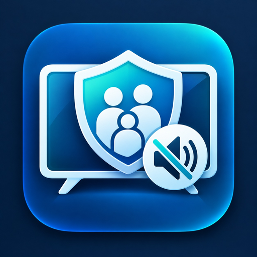

Mute swearing on TV without cutting the video
To mute swearing on TV without cutting the video, use Family Filter TV on an Android TV or Google TV: unwanted language is automatically muted while the picture carries on normally, and the sound returns by itself.

What changes while you watch?
- The picture keeps playing.
- Unwanted language is automatically muted when filtering is available.
- The sound returns automatically.
- You choose how strict the household filter should be.
What it does not change
Family Filter TV does not cut the video or currently filter violence or nudity. Its focus today is unwanted language.
Where it works today
Family Filter TV runs on Android TV, Android TV boxes and Android phones, and works with supported Stremio playback. It also follows along while you watch Netflix and other apps on your Android TV: pick the title on your Android phone and the TV mutes the swearing. Muting is best effort. English titles only for now, and it does not work with the built-in apps of Samsung, LG and other non-Android TVs. Family Filter TV is not affiliated with Netflix.
Questions
How do you mute swearing on TV without cutting the video?
Use an app that listens for swear words and lowers the sound for a moment. Family Filter TV does this on Android TV, Google TV and Android TV boxes: unwanted language is automatically muted when filtering is available, the sound returns by itself, and the picture keeps playing.
Does it cut or skip scenes?
No. The picture keeps playing normally and nothing is cut, blurred or skipped. Only the sound briefly drops.
Which TVs does it work on?
Android TV, Google TV and Android TV boxes, with a companion app on an Android phone. It does not work with the built-in apps of Samsung, LG and other non-Android TVs.
Can it mute swearing on Netflix?
Family Filter TV follows along while you watch Netflix and other apps on your Android TV or Google TV: you pick the title on your Android phone and the TV mutes the swearing. Muting is best effort and works for English titles for now. Family Filter TV is not affiliated with Netflix.
Does it filter violence or nudity?
No. Its focus today is unwanted language, and it does not filter violence or nudity.
Ready to watch together?
Comparing options? How Family Filter TV compares to VidAngel and ClearPlay.